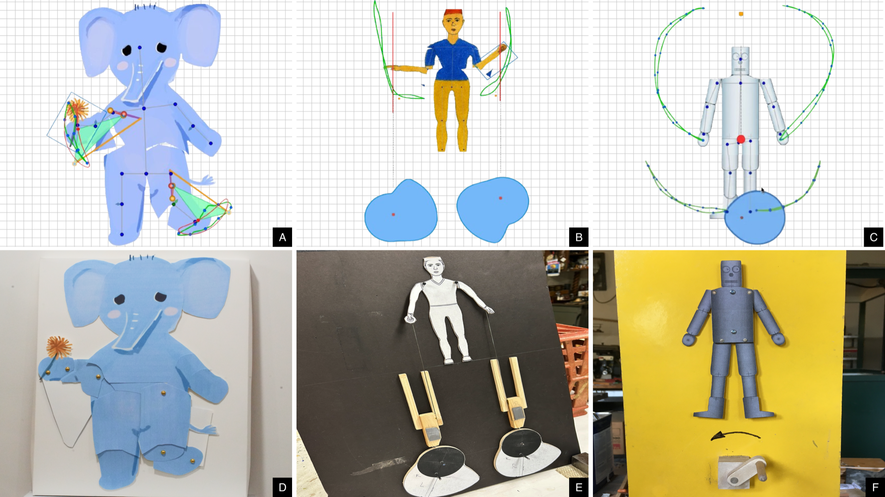
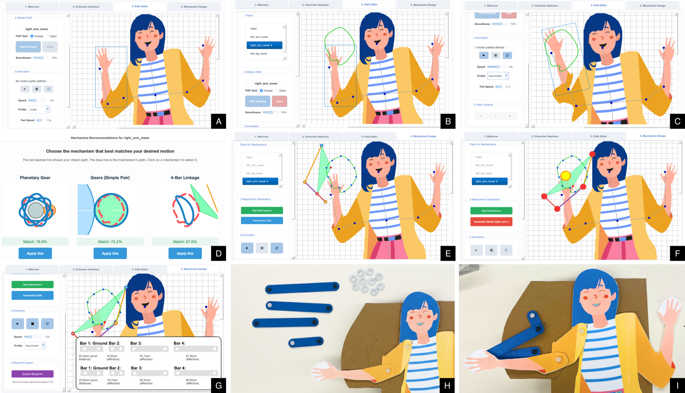
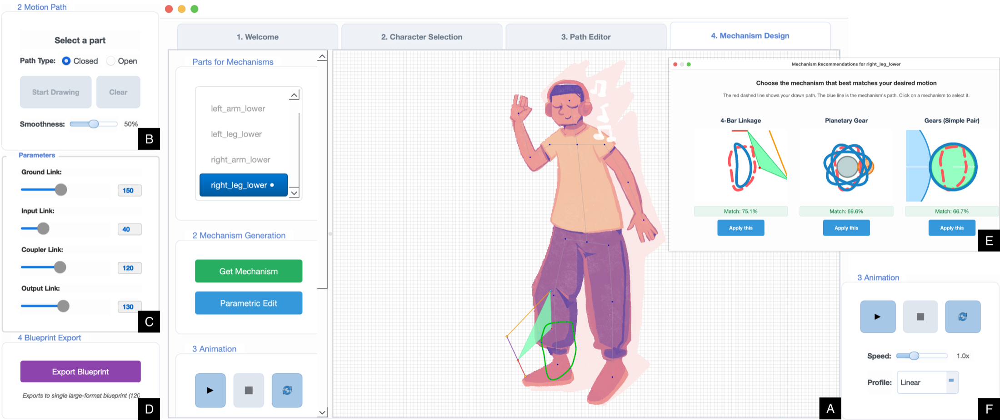
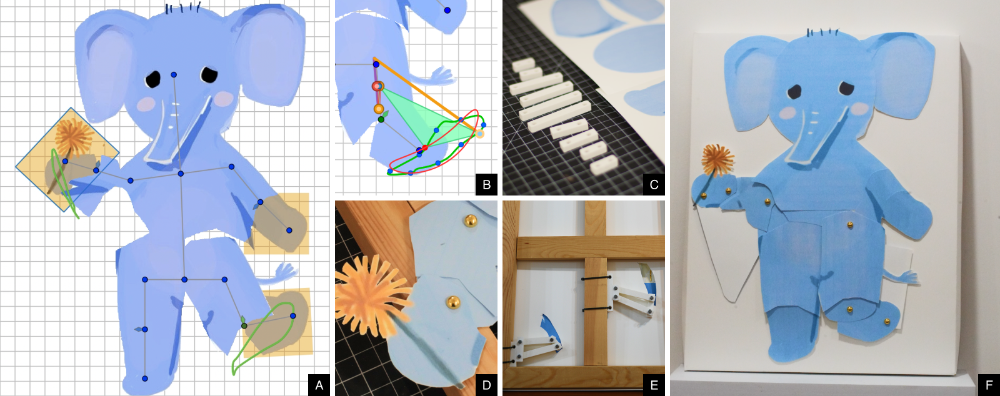
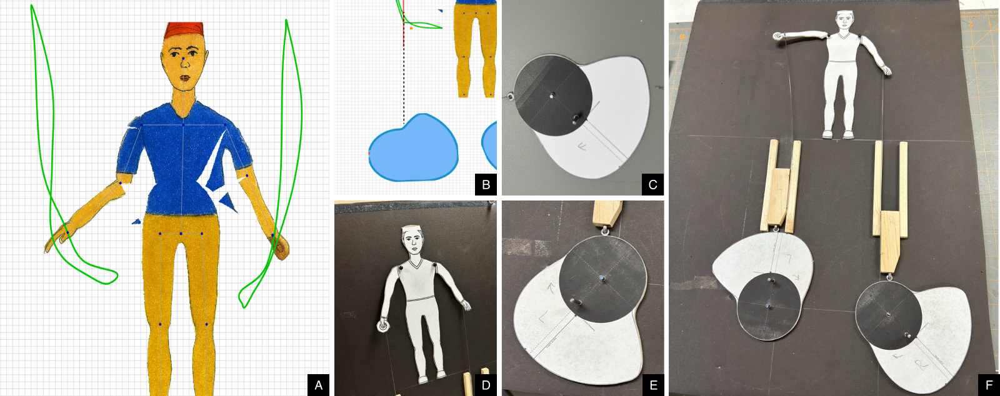
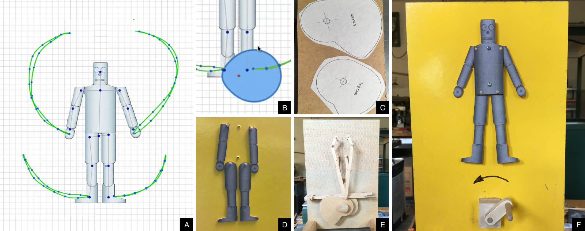

01
Identify a goal
Import a character, define the rig, sketch a motion path, and adjust pacing or smoothness.
CHI 2026
Sketch motion, compare mechanisms, refine the result, and export fabrication-ready automata.

Overview
MotionSmith is a sketch-based computational design system for automata making. Users sketch a target motion, inspect generated mechanisms, refine the selected design, and export fabrication-ready files.
The system was developed through participatory design with experienced automata makers, so the workflow keeps artistic intent visible from the first sketch through fabrication.
01
Participatory design shaped the workflow. Controls, pacing, and fabrication support were refined through long-term collaboration with expert makers.02
Three stages keep the tool readable. The system moves from motion sketching to mechanism generation to export without hiding the intermediate steps.03
Three finished artifacts ground the contribution. A shy elephant, a cheering man, and a tin robot demonstrate the expressive range of the workflow.Demo
System
MotionSmith moves from motion-path sketching to mechanism generation to fabrication export in one continuous pipeline.

01
Import a character, define the rig, sketch a motion path, and adjust pacing or smoothness.
02
Compare four-bar, cam-follower, and gear candidates, then refine the selected mechanism directly on canvas.
03
Export SVG or PDF blueprint packets that bridge the digital design to a physical automaton.
Interface

The application keeps authoring, mechanism comparison, parametric refinement, pacing review, and blueprint export in one place, so users do not have to switch mental models as the design becomes more concrete.
Cases
Each deployment spans the full handoff from MotionSmith authoring, to mechanism choice, to fabrication and the finished automaton.

Case 01
The piece evolved from a simpler leg lift into a quieter flower-holding gesture with a distinct shy rhythm.

Case 02
This deployment turned iterative arm-raising sketches into a cleaner, more humorous cheering gesture.

Case 03
The robot expanded from arm motion to a fuller angel-like gesture with coordinated arm and leg accents.
Citation
The full paper is available as a local PDF. The DOI and BibTeX are included below for quick reference.
BibTeX
@inproceedings{synn2026motionsmith,
title = {MotionSmith: A Sketch-Based Design System for Automata Making},
author = {Synn, DoangJoo (Alan) and Guo, Zhifan and Ha, Sehoon and Oh, HyunJoo},
booktitle = {Proceedings of the 2026 CHI Conference on Human Factors in Computing Systems},
year = {2026},
doi = {10.1145/3772318.3791545}
}